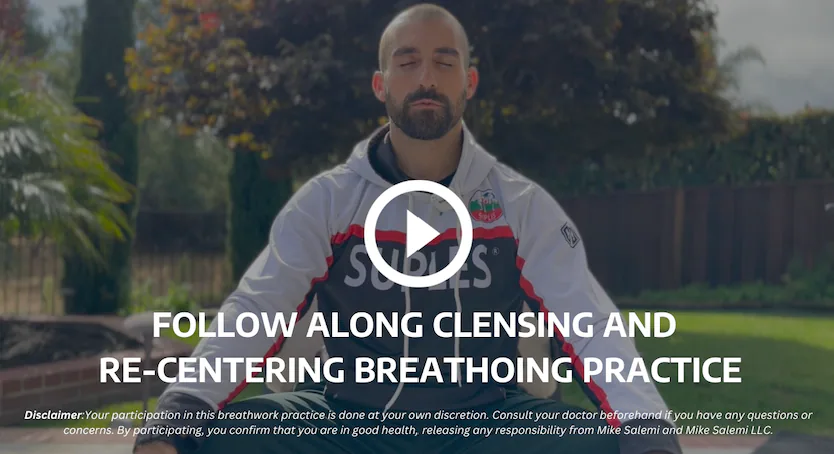

B976 · Unlock Inner Calm [Your Free Breathwork Practice]
Hi {first_name},
Throughout my journey, I've explored various breathwork techniques and embodiment practices that have been profound tools for my healing and growth.
I’ve used breathwork over the years for various reasons, some of which include:
Depending on the specific objective of the practice, elements like the intention, mechanics, pacing, duration, etc., can all vary.
As mentioned, the application of breathwork in my life, as well as in the lives of the people I work with, has been deeply transformative.
Somatic breathwork, in particular, stands out as one powerful modality that can help release stress and pressure, connect us deeply with our emotions, express ourselves authentically, and restore us to inner calm.
It can bring about an opening, relief, and a balancing of the nervous system that empowers you to create a sense of safety within your body - which, in my opinion, is a prerequisite to any form of healing.
With this in mind, while the Somatic Release Breathwork I incorporate into my programs and in-person experiences is a deep ceremonial process, there is a distilled, much shorter version that you can use whenever you need to release stress, gain clarity, and re-harmonize your nervous system on a daily basis.
As a gift, I am including this video that you can follow along with.
Feel free to customize this practice by adjusting the number of breaths. However, I find it works best if you maintain the alternating pattern of mouth breathing (up-regulating) and nasal breathing (down-regulating).
I will share some tips at the beginning of the video and will include a few more below.
Breathwork Protocol Format:
 In terms of mechanics, the breathing should occur in three dimensions, expanding front and back, laterally (sideways) in the belly and ribcage, and finally with some elevation in the chest at the end.
The breath should be smooth and circular, meaning it flows seamlessly from inhale to exhale - except during the short breath hold (if you have any blood pressure issues, I suggest omitting the holds).
I recommend doing this practice while seated or lying down. If you feel dizzy, slow down the pace of your breath. Avoid standing up quickly afterward, and gradually exit the practice.
Journaling for a few minutes afterward can be very supportive too.
This practice is intended for daily/anytime use and is not meant to open up a deep internal/emotional process. However, be aware that certain emotions may surface as breathing is powerful, so please listen to the wisdom of your body and navigate this practice mindfully. Proceed at your own pace and engage at a level that feels supportive to you on that given day.
Wishing you a fantastic rest of your week and I hope you love this! Mike
P.S. If you're interested in delving deeper into breathwork and embodiment practices, consider joining my upcoming men's virtual program, The Path to Inspired Action, as well as the Men of Movement: Initiation Experience on Nov. 10-12th.
The group Path to Inspired Program begins on Monday, October 2nd, and we have already assembled an exceptional group of men for the program. If you're ready to level up, be supported, and support other men on their journey, now is the time to join. Click here for more info and to hop on a call with me today. |